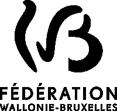

Le problème climatique est global. Il menace les écosystèmes, la vie animale et la vie humaine à moyen terme. Cet état d’urgence devrait inciter les gouvernements, animés par la défense de l’intérêt général, à prendre des mesures radicales et immédiates. Or, malgré une apparente prise de conscience et certains engagements de la part des états, les avancées réelles sont jusque là bien trop timides pour renverser la tendance. Pourquoi est-il aussi difficile de concrétiser, par la loi, la transition vers davantage d’énergies renouvelables ou des mesures d’efficacité et d’économie énergétique ? Où se situent les freins ? Pourquoi le politique semble aussi impuissant ? Où se situe le véritable pouvoir et quels sont les contre-pouvoirs ?
Les mesures en faveur de la protection de l’environnement et du ralentissement du changement climatique ont des répercussions économiques, géostratégiques, géopolitiques et touchent des secteurs d’activité bien au-delà de celui de l’énergie. Afin de mesurer les conséquences des mesures imaginées et construire des modèles écologiques et économiques durables, il est donc nécessaire de prendre en compte de nombreux paramètres qui demandent aux décideurs politiques un haut niveau d’expertise. C’est ici qu’entrent en jeu les lobbyistes, qui, en tant qu’experts, exposent leurs points de vues aux politiques, les conseillent, ou parfois même rédigent pour eux des projets de lois ou d’amendements en espérant ainsi préserver les intérêts qu’ils défendent. S’il est légitime que les politiques consultent les acteurs des industries impactées par leurs décisions, il est indispensable qu’ils entendent des points de vues de personnes ou d’organisations défendant l’intérêt général. Cependant, les défenseurs des intérêts publics sont très largement minoritaires dans la composition des groupes d’experts sollicités, notamment par la Commission européenne, et sont beaucoup moins nombreux dans le quartier européen à Bruxelles. Ce vice organique est une anomalie démocratique qui conduit à ce que, bien souvent, les régulés soient les régulateurs (Dans le rapport Smoke & Mirrors, Greenpeace se demande Comment les plus gros pollueurs européens sont devenus leurs propres régulateurs ?)
Le lobbying ne doit pas être confondu avec la corruption. Il s’agit d’une activité légale pratiquée par des personnes et des organisations susceptibles de défendre des positions extrêmement diverses. Si le lobbying n’est pas, en soit, indésirable, il doit lui aussi être régulé et, pour commencer, être transparent. Les institutions européennes ont fait un premier pas, bien que timide, dans cette direction en créant le Registre de transparence ayant pour vocation d’enregistrer et rendre public les personnes et les organisations lobbyistes ainsi que les montants qu’elles dépensent. Vi(c)e organique s’appuie sur cette base de données et la croise notamment avec les résultats de la consultation de la Commission européenne sur les objectifs climatiques à l’horizon 2030 afin de voir, sur un sujet spécifique, quelles organisations ont apporté leurs points de vues à la Commission, quelles positions elles ont adopté, quelles sommes elles dépensent en lobbying ou quelles relations elles entretiennent. Ces réseaux peuvent alors être confrontés aux décisions finalement prises par la Commission et aux révélations de la presse ou des ONGs à partir d’exemples précis permettant de comprendre les méthodes des lobbies pour influencer les politiques.
Bien que la consultation de la Commission européenne sur le Cadre pour le climat à l’horizon 2030, à l’origine du projet, aborde de nombreux aspects de la politique climatique, Vi(c)e organique a choisi de se concentrer sur 4 de ces aspects globalement moins techniques et ayant fait l’objet de débats controversés. La réduction des émissions de gaz à effet de serre, les énergies renouvelables et l’efficacité énergétique correspondent aux grands objectifs sur lesquels s’est prononcée la Commission et le devenir du gaz de schiste est un sujet brûlant toujours en discussion.
Les données sur le type d’organisations, les origines géographiques, l’estimation des coûts de lobbying, le nombre de personnes impliquées et les liens d’affiliation proviennent du Registre de transparence. Il faut noter, cependant, que les données de ce registre sont largement imparfaites et incomplètes. Bien que l’inscription au registre soit désormais obligatoire « pour tout groupe d’intérêt qui voudrait s’entretenir avec une fonctionnaire de haut niveau », il n’existe pas de sanction pour les contrevenants et, d’autre part, les contrôles et vérifications des informations sont quasi inexistantes. Pour les organisations non inscrites dans le registre, les données d’affiliations ont été directement récoltées sur le site Web des organisations.
Les positions des organisations sont connues grâce aux recherches du Simpol project et en particulier de la campagne de crowdsourcing qui permet d’analyser les réponses des organisations à la consultation de la Commission européenne sur le Cadre pour le climat à l’horizon 2030. Le crowdsourcing est ouvert à tous et chacun peut contribuer à la recherche. Le processus étant toujours en cours, d’autres organisations seront ajoutées au fur et à mesure dans la base de données de Vi(c)e organique. Cependant, les plus importantes par leur budget de lobbying ou leur nombre de connexions aux autres organisations sont déjà présentes. Dans la description des organisations (au clic sur les « cellules »), apparaissent les positions de l’organisation choisie sur les 4 sujets. L’organisation apparaît comme étant pour ou contre mais peut aussi affichée « NSPP » quand elle ne s’est pas prononcée sur le sujet ou « controversé » lorsque les contributeurs du crowdsourcing ont évalué la position de l’organisation de manière contradictoire.
Les données de propriétés proviennent de différentes sources : du site Web des entreprises ou de leur rapport financier annuel, des sites spécialisés Nasdaq ou 4-traders, ou plus rarement de Wikipédia.
Concernant la catégorisation par secteur, la nomenclature Nace ne s’appliquant pas aux ONG ou aux associations professionnelles de nouvelles catégories ont été créées permettant de mieux distinguer les organisations évoluant dans le secteur de l’énergie. Les sites Web des organisations et le code Nace des entreprises ont permis leur classification dans ces nouvelles catégories.
Enfin, les « meilleurs alliés » et « pires adversaires » sont établis à partir d’un algorithme calculant pour chaque organisation une quantité de points en fonction de son budget de lobbying et du budget des organisations avec laquelle elle est liée. Être connecté à une organisation partageant sa position octroie des points ou en retire si la position est opposée.
Le processus de fabrication des lois et des normes, comme l’activité de lobbying, ne s’apparente pas au mécanique mais plutôt au vivant. La métaphore de la machine, du système mécanique qui parfois déraille et nécessite alors une simple réparation, est fréquemment emprunter dans ce contexte mais ne constitue pas une image pertinente. D’une part, le fantasme de la machine implique un inventeur, un ingénieur qui en comprend les rouages et maîtrise le dispositif, ce qui n’existe pas dans l’activité économique ou politique. D’autre part, la machine est conçue pour remplir une ou plusieurs tâches prédéfinies et il est difficile d’imaginer s’impliquer dans son fonctionnement ou d’en modifier le rôle. C’est la raison pour laquelle, Vi(c)e organique regarde du côté du vivant : démystifier le lobbying passe par la description de son écosystème et par des exemples qui permettent d’en saisir la raison d’être, les méthodes de survie et les stratégies d’attaque et de défense.
Si la première partie joue sur l’identification administrative à partir de statistiques, l’entrée progressive dans le réseau en deuxième partie nous place dans une vie organique. Chaque « cellule » représente une organisation lobbyiste avec un « noyau » de taille fixe et une « membrane » dont le diamètre est proportionnel aux dépenses de lobbying estimées (les cellules sans membrane correspondent aux organisations non répertoriées dans le registre ou celles ne donnant pas cette information). Ces estimations provenant du Registre de transparence, sous forme de fourchette, ont davantage un rôle comparatif qu’une fonction analytique précise. La membrane n’apparaît donc pas comme un cercle parfait mais comme une forme patatoïde en mouvement. De la même manière, des « synapses » ondulées et jamais tout à fait immobiles relient les cellules. Ainsi le caractère organique, s’il permet de décrire l’action politique du lobbying, permet également de faire preuve de transparence dans la présentation des données en ne donnant pas d’images fixes et définitives du réseau mais en assumant le fait que la représentation d’un réseau sera toujours une image possible parmi d’autres et que les données d’un tel projet sont toujours imparfaites et incomplètes. Cela ne disqualifie cependant pas l’information qui peut être extraite de Vi(c)e organique mais présente un état de fait trop souvent évacué des visualisations de données.
Vi(c)e organique est développé en HTML5 et JavaScript et utilise la bibliothèque d3.js créée par Mike Bostock. Les bibliothèques Chroma.js de Gregor Aisch et Object-assign.js de Sindre Sorhus ont également facilitées le développement de ce projet. Vi(c)e organique n’est, à ce jour, pas adapté à la navigation sur tablette ou smartphone et nous recommandons Chrome pour une meilleure expérience de visualisation. Le code de Vi(c)e organique est placé sous licence libre CC BY-NC-SA 4.0
Vi(c)e Organique est un projet de Fabrice Sabatier. Je suis graphiste, designer et chercheur dans le collectif .CORP et je m’intéresse à la politique des visualisations de données. Ce projet a pu voir le jour grâce au travail de programmation d’Axel Correia et aux précieuses lignes de code pour le rendu graphique organique de l’agence Skoli, je les remercie chaleureusement ! Un grand merci également au Professeur Stefano Battiston et à l’équipe du Simpol Project pour le partage de leurs données et de leurs connaissances.
Vi(c)e Organique a reçu le soutien de la cellule Arts numériques de Fédération Wallonie-Bruxelles.
Un soutien technique, matériel, logistique ou humain m’a également été apporté par .CORP, le Random(lab) de l’ESAD Saint-Étienne, l’Assaut de la Menuiserie de Saint-Etienne, le laboratoire sauvage de recherches expérimentales Désorceler la finance, le laboratoire Iridia de l’ULB et l’erg. Enfin, je tiens à remercier individuellement Vincent Gobber et Damien Baïs, Luce Goutelle et Aline Fares, David-Olivier Lartigaud, Giampiero Caiti, Hugues Bersini, Jacques-Daniel Pillon et Philippe Colantoni.